4 Normal Distribution Models
This chapter was mainly analytic derivations, but there was one section that did code so I show that in JAGS and Stan.
4.1 Stan Model for mean and variance unknown
The model for mean and variance unknown for normal sampling.
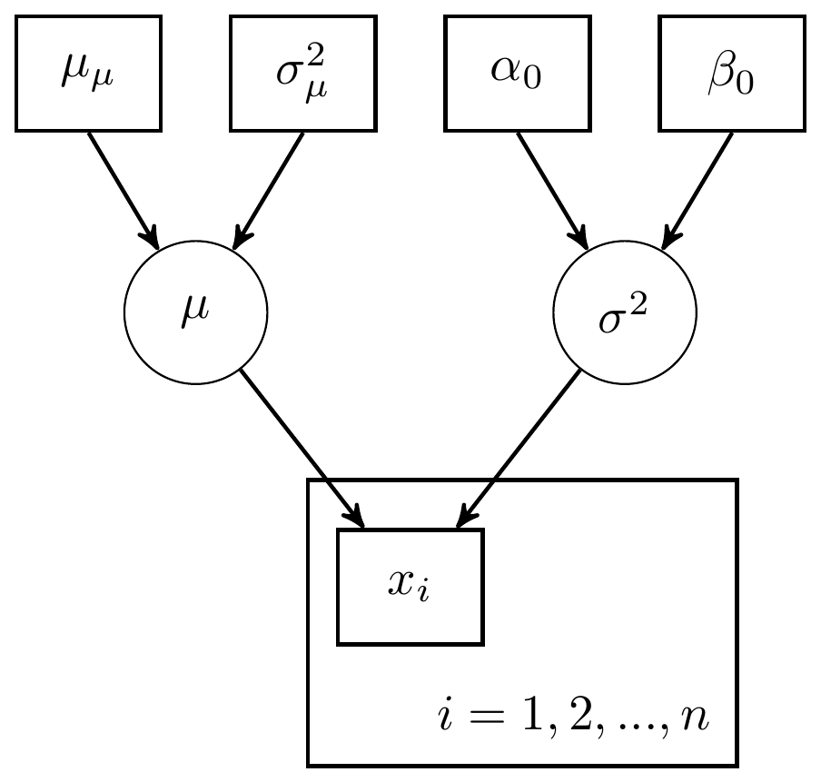
Figure 4.1: DAG with for mean and variance unknown: Variance parameterization
Or, alternatively,

Figure 4.2: Model specification diagram for normal model
model_normal <- '
data {
int N;
real x[N];
real mu0;
real sigma0;
real alpha0;
real beta0;
}
parameters {
real mu;
real<lower=0> sigma;
}
model {
x ~ normal(mu, sigma);
mu ~ normal(mu0, sigma0);
sigma ~ inv_gamma(alpha0, beta0);
}
'
# data must be in a list
mydata <- list(
N = 10,
x=c(91, 85, 72, 87, 71, 77, 88, 94, 84, 92),
mu0 = 75,
sigma0 = 50,
alpha0 = 5,
beta0 = 150
)
# start values
start_values <- function(){
list(mu=50, sigma=5)
}
# Next, need to fit the model
# I have explicited outlined some common parameters
fit <- stan(
model_code = model_normal, # model code to be compiled
data = mydata, # my data
init = start_values, # starting values
chains = 4, # number of Markov chains
warmup = 1000, # number of warm up iterations per chain
iter = 5000, # total number of iterations per chain
cores = 2, # number of cores (could use one per chain)
refresh = 0 # no progress shown
)
# first get a basic breakdown of the posteriors
print(fit)## Inference for Stan model: anon_model.
## 4 chains, each with iter=5000; warmup=1000; thin=1;
## post-warmup draws per chain=4000, total post-warmup draws=16000.
##
## mean se_mean sd 2.5% 25% 50% 75% 97.5% n_eff Rhat
## mu 84.04 0.05 4.69 74.66 81.10 84.02 86.97 93.53 8115 1
## sigma 14.79 0.05 3.90 9.19 12.03 14.14 16.80 24.39 7202 1
## lp__ -52.86 0.01 1.05 -55.75 -53.27 -52.54 -52.11 -51.83 5704 1
##
## Samples were drawn using NUTS(diag_e) at Sun Jun 19 17:29:35 2022.
## For each parameter, n_eff is a crude measure of effective sample size,
## and Rhat is the potential scale reduction factor on split chains (at
## convergence, Rhat=1).
# plot the posterior in a
# 95% probability interval
# and 80% to contrast the dispersion
plot(fit)## ci_level: 0.8 (80% intervals)## outer_level: 0.95 (95% intervals)
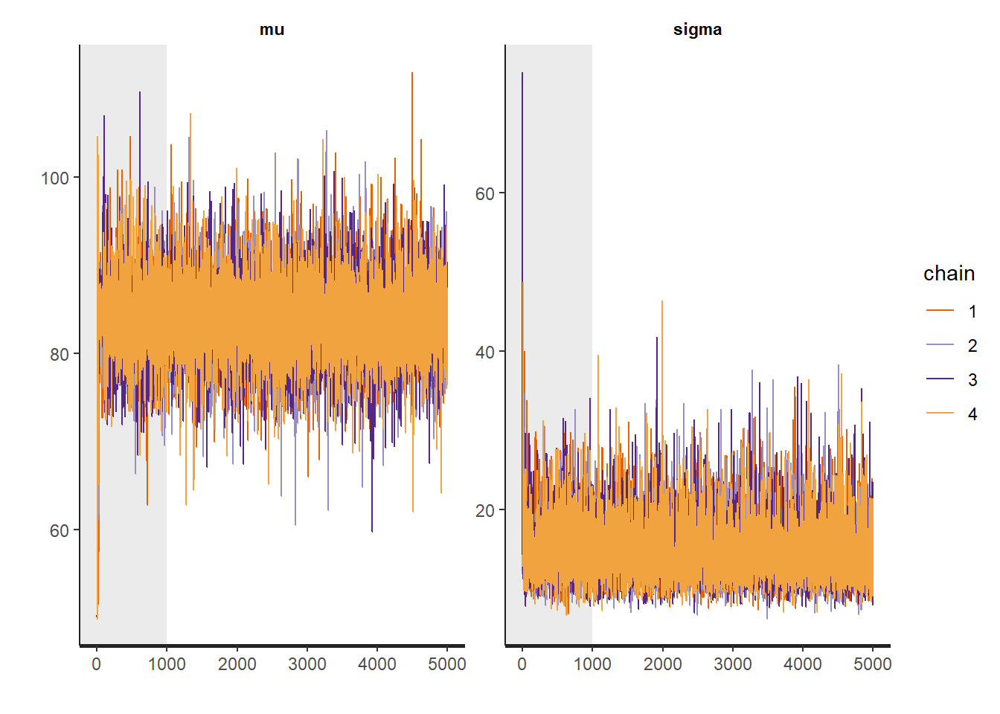
# Gelman-Rubin-Brooks Convergence Criterion
ggs_grb(ggs(fit)) +
theme_bw() + theme(panel.grid = element_blank())
# autocorrelation
ggs_autocorrelation(ggs(fit)) +
theme_bw() + theme(panel.grid = element_blank())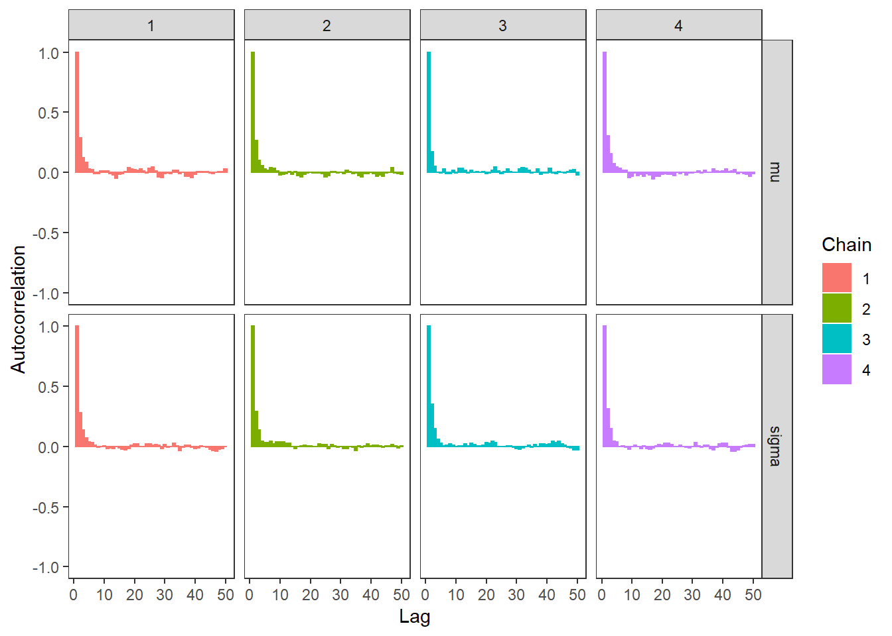
# plot the posterior density
posterior <- as.matrix(fit)
plot_title <- ggtitle("Posterior distributions",
"with medians and 80% intervals")
mcmc_areas(
posterior,
pars = c("mu", "sigma"),
prob = 0.8) +
plot_title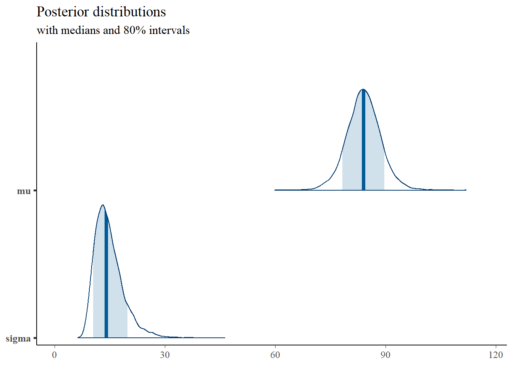
# bivariate plot
posterior <- as.data.frame(posterior)
p <- ggplot(posterior, aes(x=mu, y=sigma))+
geom_point()+
theme_bw()+
theme(panel.grid = element_blank())
p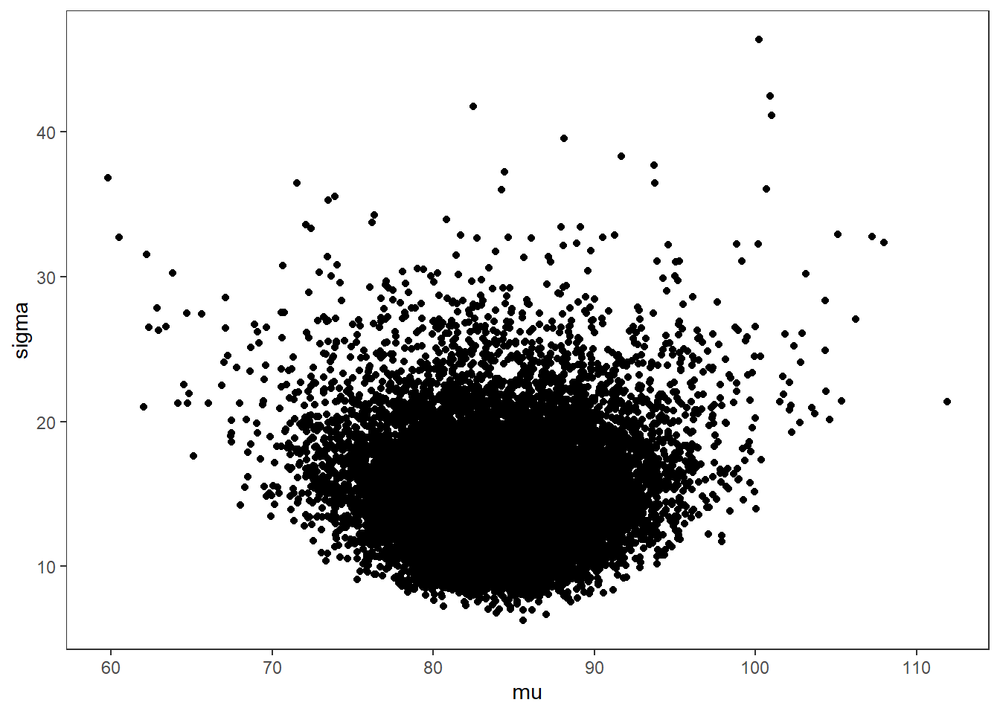
# I prefer a posterior plot that includes prior and MLE
MLE <- c(mean(mydata$x), sd(mydata$x))
prior_mu <- function(x){dnorm(x, 75, 50)}
x.mu <- seq(60.01, 120, 0.01)
prior.mu <- data.frame(mu=x.mu, dens.mu = prior_mu(x.mu))
prior_sig <- function(x){extraDistr::dinvgamma(x, 5, 150)}
x.sig <- seq(0.01, 60, 0.01)
prior.sig <- data.frame(sigma=x.sig, dens.sig = prior_sig(x.sig))
cols <- c("Posterior"="#0072B2", "Prior"="#E69F00", "MLE"= "black")#"#56B4E9", "#E69F00" "#CC79A7"
p1 <- ggplot()+
geom_density(data=posterior,
aes(x=mu, color="Posterior"))+
geom_line(data=prior.mu,
aes(x=x.mu, y=dens.mu, color="Prior"))+
geom_vline(aes(xintercept=MLE[1], color="MLE"))+
scale_color_manual(values=cols, name=NULL)+
theme_bw()+
theme(panel.grid = element_blank())
p2 <- ggplot()+
geom_density(data=posterior,
aes(x=sigma, color="Posterior"))+
geom_line(data=prior.sig,
aes(x=sigma, y=dens.sig, color="Prior"))+
geom_vline(aes(xintercept=MLE[2], color="MLE"))+
scale_color_manual(values=cols, name=NULL)+
theme_bw()+
theme(panel.grid = element_blank())
p1 + p2 + plot_layout(guides="collect")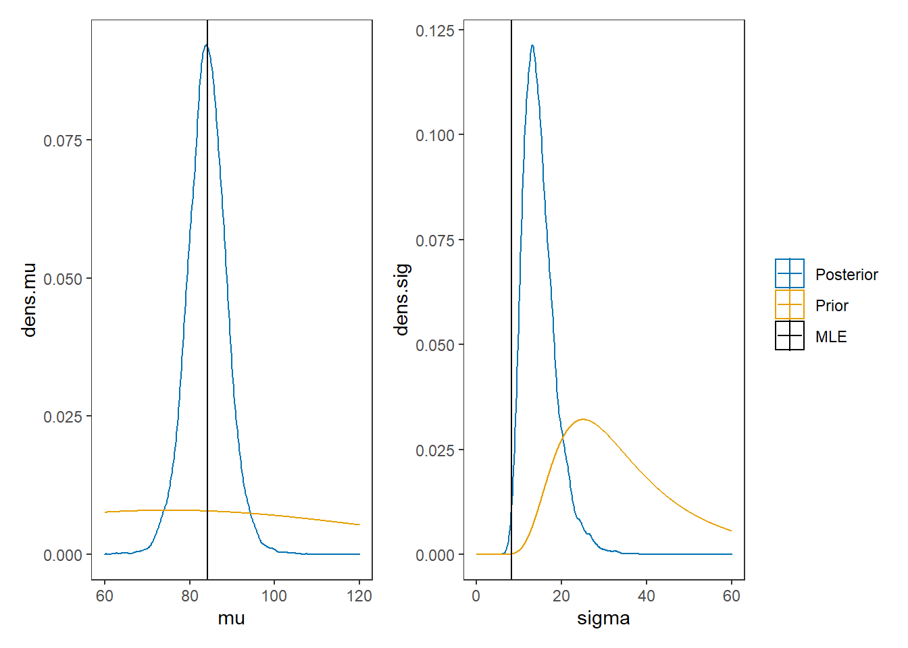
4.2 JAGS Model for mean and variance unknown (precision parameterization)
The model for mean and variance unknown for normal sampling.
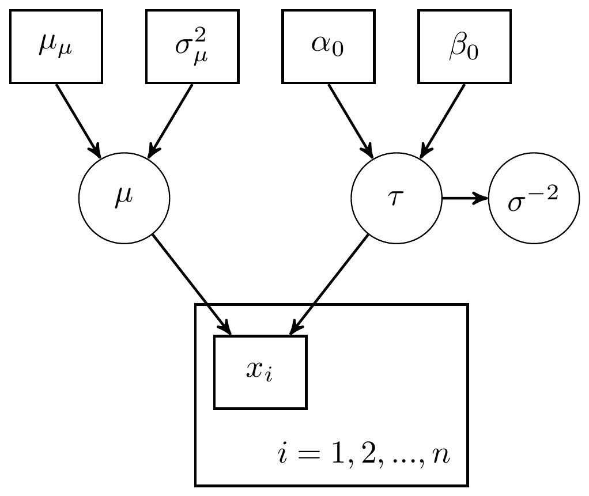
Figure 4.3: DAG with for mean and variance unknown: Precision parameterization
Or, alternatively,

Figure 4.4: Model specification diagram for normal model with precision parameterization
Now for the computation using JAGS
# model code
jags.model <- function(){
#############################################
# Conditional distribution for the data
#############################################
for(i in 1:n){
x[i] ~ dnorm(mu, tau) # conditional distribution of the data
} # closes loop over subjects
#############################################
# Define the prior distributions for the unknown parameters
# The mean of the data (mu)
# The variance (sigma.squared) and precision (tau) of the data
#############################################
mu ~ dnorm(mu.mu, tau.mu) # prior distribution for mu
mu.mu <- 75 # mean of the prior for mu
sigma.squared.mu <- 50 # variance of the prior for mu
tau.mu <- 1/sigma.squared.mu # precision of the prior for mu
tau ~ dgamma(alpha, beta) # precision of the data
sigma.squared <- 1/tau # variance of the data
sigma <- pow(sigma.squared, 0.5) # taking square root
nu.0 <- 10 # hyperparameter for prior for tau
sigma.squared.0 <- 30 # hyperparameter for prior for tau
alpha <- nu.0/2 # hyperparameter for prior for tau
beta <- nu.0*sigma.squared.0/2 # hyperparameter for prior for tau
}
# data
mydata <- list(
n=10,
x=c(91, 85, 72, 87, 71, 77, 88, 94, 84, 92))
# starting values
start_values <- function(){
list("mu"=75, "tau"=0.1)
}
# vector of all parameters to save
param_save <- c("mu", "tau", "sigma")
# fit model
fit <- jags(
model.file=jags.model,
data=mydata,
inits=start_values,
parameters.to.save = param_save,
n.iter=4000,
n.burnin = 1000,
n.chains = 4,
n.thin=1,
progress.bar = "none")## Compiling model graph
## Resolving undeclared variables
## Allocating nodes
## Graph information:
## Observed stochastic nodes: 10
## Unobserved stochastic nodes: 2
## Total graph size: 26
##
## Initializing model
print(fit)## Inference for Bugs model at "C:/Users/noahp/AppData/Local/Temp/RtmpQR8sbs/model4544158a4038.txt", fit using jags,
## 4 chains, each with 4000 iterations (first 1000 discarded)
## n.sims = 12000 iterations saved
## mu.vect sd.vect 2.5% 25% 50% 75% 97.5% Rhat n.eff
## mu 83.268 2.204 78.845 81.869 83.282 84.725 87.471 1.001 12000
## sigma 7.176 1.238 5.251 6.288 7.007 7.903 10.050 1.001 4000
## tau 0.021 0.007 0.010 0.016 0.020 0.025 0.036 1.001 4000
## deviance 71.212 1.835 69.393 69.897 70.659 71.952 76.128 1.001 12000
##
## For each parameter, n.eff is a crude measure of effective sample size,
## and Rhat is the potential scale reduction factor (at convergence, Rhat=1).
##
## DIC info (using the rule, pD = var(deviance)/2)
## pD = 1.7 and DIC = 72.9
## DIC is an estimate of expected predictive error (lower deviance is better).
# extract posteriors for all chains
jags.mcmc <- as.mcmc(fit)
R2jags::traceplot(jags.mcmc) 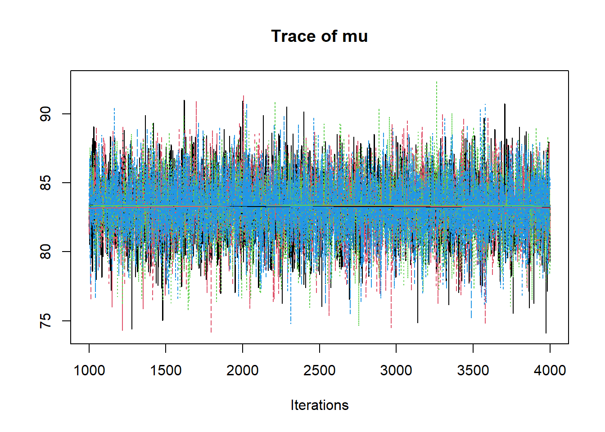
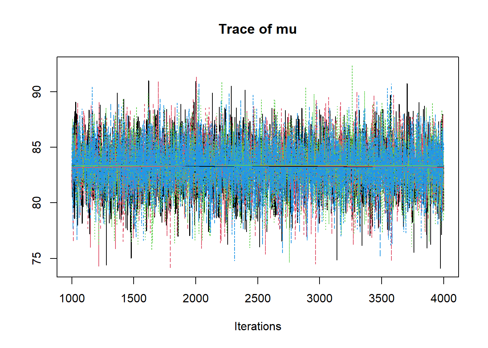 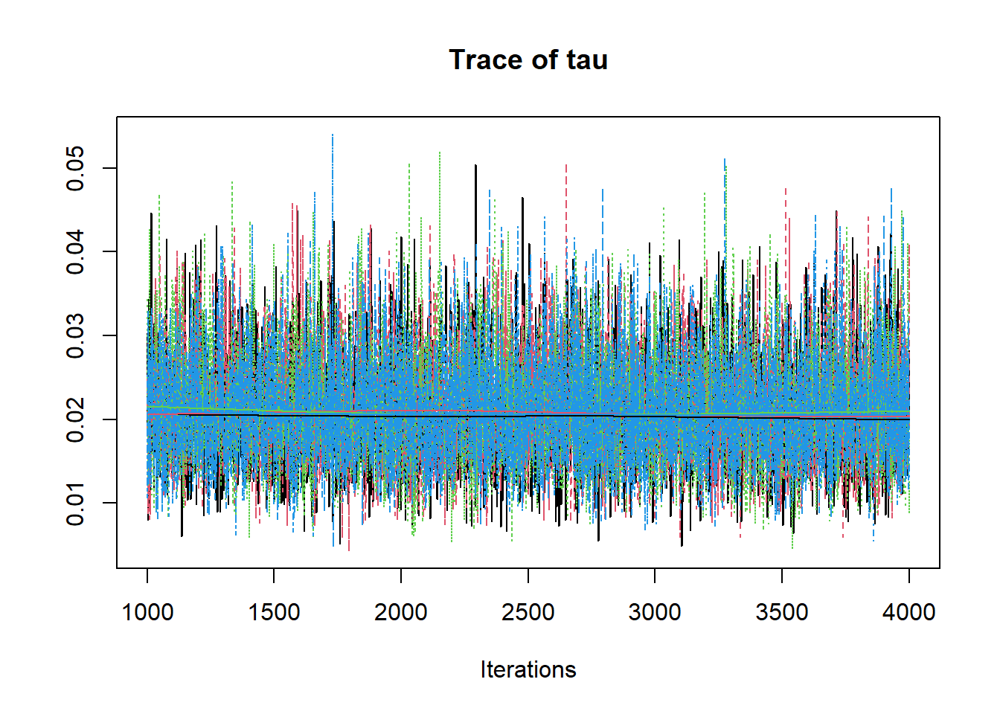
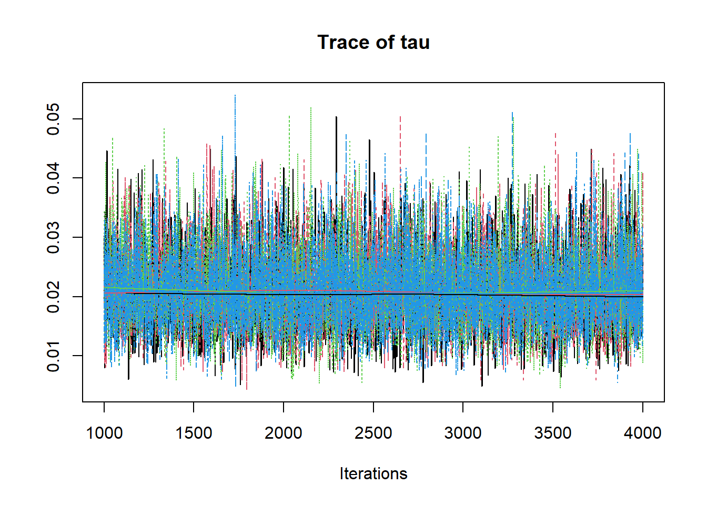
# gelman-rubin-brook
gelman.plot(jags.mcmc)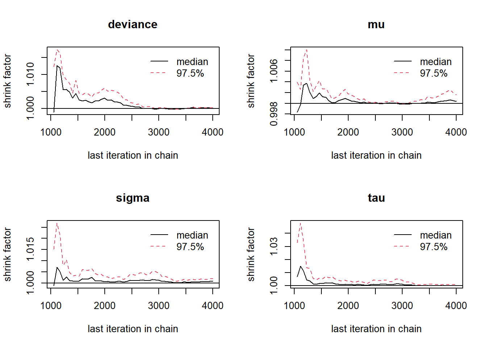
# convert to single data.frame for density plot
a <- colnames(as.data.frame(jags.mcmc[[1]]))
plot.data <- data.frame(as.matrix(jags.mcmc, chains=T, iters = T))
colnames(plot.data) <- c("chain", "iter", a)
plot_title <- ggtitle("Posterior distributions",
"with medians and 80% intervals")
mcmc_areas(
plot.data,
pars = c("mu"),
prob = 0.8) +
plot_title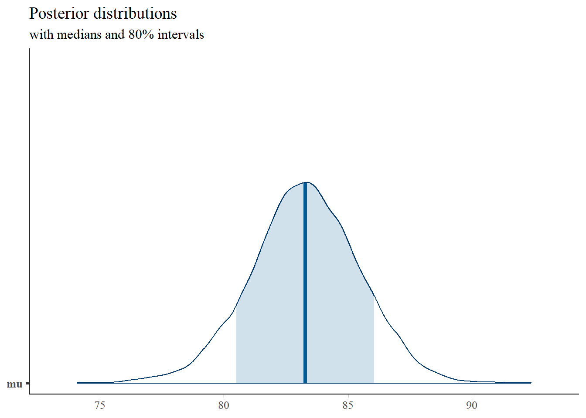
mcmc_areas(
plot.data,
pars = c("tau"),
prob = 0.8) +
plot_title
mcmc_areas(
plot.data,
pars = c("sigma"),
prob = 0.8) +
plot_title
# bivariate plot
p <- ggplot(plot.data, aes(x=mu, y=tau))+
geom_point()+
theme_bw()+
theme(panel.grid = element_blank())
p
# I prefer a posterior plot that includes prior and MLE
MLE <- c(mean(mydata$x), 1/var(mydata$x))
prior_mu <- function(x){dnorm(x, 75, 50)}
x.mu <- seq(70.01, 100, 0.01)
prior.mu <- data.frame(mu=x.mu, dens.mu = prior_mu(x.mu))
prior_tau <- function(x){dgamma(x, 5, 150)}
x.tau <- seq(0.0001, 0.06, 0.0001)
prior.tau <- data.frame(tau=x.tau, dens.tau = prior_tau(x.tau))
cols <- c("Posterior"="#0072B2", "Prior"="#E69F00", "MLE"= "black")#"#56B4E9", "#E69F00" "#CC79A7"
p1 <- ggplot()+
geom_density(data=plot.data,
aes(x=mu, color="Posterior"))+
geom_line(data=prior.mu,
aes(x=x.mu, y=dens.mu, color="Prior"))+
geom_vline(aes(xintercept=MLE[1], color="MLE"))+
scale_color_manual(values=cols, name=NULL)+
theme_bw()+
theme(panel.grid = element_blank())
p2 <- ggplot()+
geom_density(data=plot.data,
aes(x=tau, color="Posterior"))+
geom_line(data=prior.tau,
aes(x=tau, y=dens.tau, color="Prior"))+
geom_vline(aes(xintercept=MLE[2], color="MLE"))+
scale_color_manual(values=cols, name=NULL)+
theme_bw()+
theme(panel.grid = element_blank())
p1 + p2 + plot_layout(guides="collect")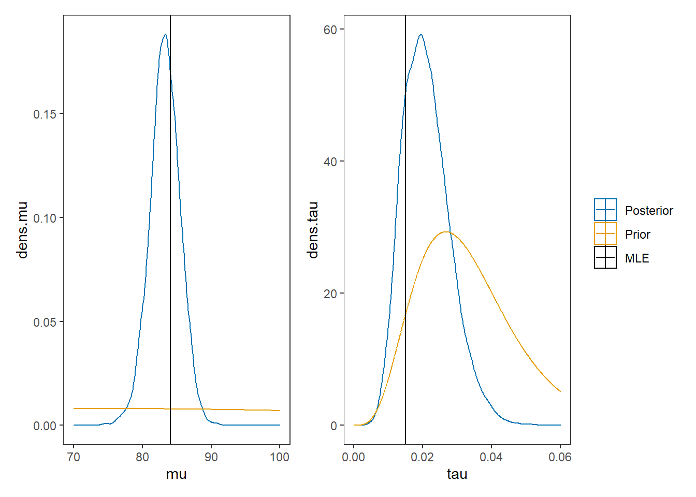